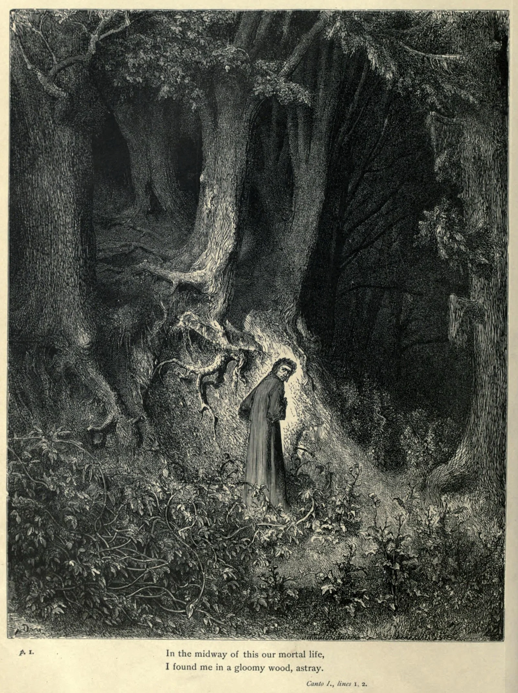

The first thing anyone does after reading the Inferno is try to draw it.
This has been true since the fourteenth century, when scribes copying Dante's manuscript began slipping small diagrams into the margins. Circles within circles, labels in cramped Latin, arrows pointing downward. The impulse was immediate and has never stopped. Botticelli did it. So did a Florentine architect named Antonio Manetti, a Roman prince named Michelangelo Caetani, and dozens of scholars, priests, and amateurs whose names survive only in library catalogues. Each of them read the same poem and drew something different.
The disagreements start early. Dante describes Hell as a cone-shaped pit beneath Jerusalem, carved into the earth by Lucifer's fall. He gives us nine concentric circles, each narrower than the last, spiralling down to a frozen lake where Satan chews on traitors. The image seems clear enough. But when you try to put it on paper, the trouble begins.
How wide is the first circle? What angle does the funnel follow? Does the seventh circle sit halfway down or closer to the bottom? Dante never says. He gives moods, not measurements. The poem runs on terror and pity, not trigonometry.
Six centuries of blueprints
Manetti was the first to treat the problem as a question of engineering. Writing in Florence around 1450, he tried to calculate the exact dimensions of Hell using the few numerical clues Dante leaves scattered through the text. He decided the pit was roughly 3,245 miles deep, with walls sloping at a precise angle. His numbers became a kind of orthodoxy. Galileo, still a young lecturer in 1588, gave two public talks on the size of Dante's Inferno, largely defending Manetti's geometry. The lectures helped launch his career.
But orthodoxy invites dissent. Other readers found different numbers in the same lines. Some made Hell wider. Others made it shallower. A few questioned whether Dante intended literal dimensions at all. The argument never settled because it couldn't. Dante was writing poetry, not a blueprint.

Botticelli's version, painted around 1480 for Lorenzo di Pierfrancesco de' Medici, takes a different approach. His Map of Hell is enormous, covering an entire sheet of parchment, and it is gorgeous. The funnel yawns open at the top, each terrace crowded with tiny figures in torment. It doesn't bother with measurements. Instead it gives you scale through accumulation, filling every ledge with bodies until the sheer density of suffering tells you how deep the hole goes.
Caetani, three centuries later, went the other way. His lithographs from the 1850s and 1870s are precise, diagrammatic, almost architectural. Colour-coded ledges. Ruled lines. Labels in neat italics. They look like cross-sections from a geology textbook. Where Botticelli paints dread, Caetani draws order. Both claim to be showing us Dante's Hell. Neither looks like the other.
The more you try to pin down what Dante built, the more the structure shifts beneath your pencil.
Every map is a misreading
Purgatory is worse. The mountain stands on an island in the southern hemisphere, directly opposite Jerusalem. Dante gives it seven terraces, a gate, and an earthly paradise at the summit. He gives us directions (they walk to the right, then to the left) and times of day (dawn, noon, sunset). But the terraces don't add up to a consistent geometry. Some interpreters draw the mountain as a steep cone. Others draw broad, flat shelves. The angles change depending on which cantos you trust and which you treat as metaphor.
Paradise is the hardest. Nine nested spheres, each one larger and faster than the one below, orbiting around the Earth in the old Ptolemaic arrangement. Beyond them sits the Empyrean, which has no physical form at all. How do you draw a place that Dante himself says exceeds the capacity of language? Most diagrammers fall back on concentric circles and hope the labels do the heavy lifting.

Modern scholars have kept trying. Digital reconstructions, 3D models, interactive websites. A team at the University of Bologna built a navigable virtual Inferno in the early 2000s. It is technically impressive and strangely flat. Walking through the circles on a screen feels nothing like reading them on a page. The scale is wrong, or the silence is wrong, or something else is missing that the poem provides and the model cannot.
That gap is the point. Dante wrote a poem that generates space without defining it. The Inferno feels enormous because of the way voices echo off unseen walls, because a pilgrim stumbles on uneven ground, because the next terrace always takes longer to reach than you expect. The poem makes you feel the architecture without ever showing you the plan. Every diagram is an attempt to reverse-engineer that feeling into a floor plan, and every diagram fails in its own way.
Which is not to say the diagrams are useless. Manetti's calculations, wrong or not, forced readers to think about Dante as a spatial thinker. Botticelli's painting taught viewers to see the Inferno as a single, vertiginous image. Caetani's lithographs gave nineteenth-century readers a visual grammar for the afterlife that persisted for decades. Each map is a reading. Each reading reveals something the poem makes possible but never guarantees.
Six hundred years of blueprints, and the building still has no fixed shape. Perhaps that is the most Dantean thing about it.